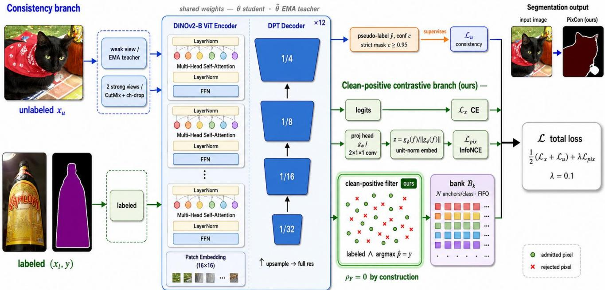

Figureure 7 · The bottleneck has moved to the encoder, and Pix-Con adds a lever on tFigure 7. The bottleneck has moved to the encoder, and Pix-Con adds a lever on top of it. Pascal VOC 1/8 mIoU versus total model size (log axis) for representative SSSS methods, grouped by backbone family (prior-work accuracies from the published numbers; prior-work parameter counts are standard backbone sizes, approximate, while the DINOv2 sizes 24.8M/97.5M are as reported). Switching a ResNet-101 pipeline to a DINOv2 encoder buys far more than a decade of method design did at fixed backbone. PixCon (green star) sits at the DINOv2-B operating point and adds no appreciable parameters over its UniMatch V2-B baseline, a 2×1×1 projection head and a ≈1.4 MB bank, yet lifts our compute-matched repro to the reported UniMatch V2-B 1/8 figure (87.90, a +0.89 3-seed mean gap that is partly variance reduction; Sec. 4.2). Our runs are compute-matched and below the full Uni-Match V2 budget, so the green star’s position reflects that budget, not a like-for-like comparison with the full-budget dots.这张图概括 PixCon 的整体方法流程。阅读时先看模块之间传递的训练信号，再看作者如何把目标拆成可优化的子问题。

Figureure 2 · The PixCon architectureFigure 2. The PixCon architecture. PixCon couples two branches over a shared DINOv2-B encoder and DPT decoder, trained end-toend under one objective. Consistency branch (top). A weak view of an unlabeled image passes through the EMA teacher to produce a pseudo-label yˆ and confidence $c ;$ a strict mask $\mathcal { M } : c \geq 0 . 9 5$ filters it, and two CutMix strong views with complementary channel dropout are trained to agree $( \mathcal { L } _ { u } )$ . This branch adopts the weak-to-strong design of UniMatch V2 [35]. Clean-positive contrastive branch (bottom, ours). The fused decoder feature of each labeled image is projected by a head $g _ { \phi }$ to a unit-norm embedding z. The clean-positive filter admits a pixel as an anchor only when it is labeled and the student already predicts its label correctly (arg max $\scriptstyle \log \mathrm { i t s } = y ) ;$ admitted anchors populate the per-class clean-positive bank $\boldsymbol { B } _ { k }$ and drive a supervised InfoNCE loss $\mathcal { L } _ { \mathrm { p i x } }$ . Because anchors are guaranteed correct, the bank’s contamination rate is zero by construction $( \rho _ { \mathrm { F } } { = } 0 , \mathsf { S e c . } 3 . 3 )$ , the property that distinguishes PixCon from confidence-filtered contrastive methods. The two branches share encoder/decoder weights and are optimised jointly as $\begin{array} { r } { \mathcal { L } { = } \frac { 1 } { 2 } ( \mathcal { L } _ { x } { + } \mathcal { L } _ { u } ) { + } \lambda _ { \mathrm { p i x } } \mathcal { L } _ { \mathrm { p i x } } } \end{array}$这张图概括 PixCon 的整体方法流程。阅读时先看模块之间传递的训练信号，再看作者如何把目标拆成可优化的子问题。